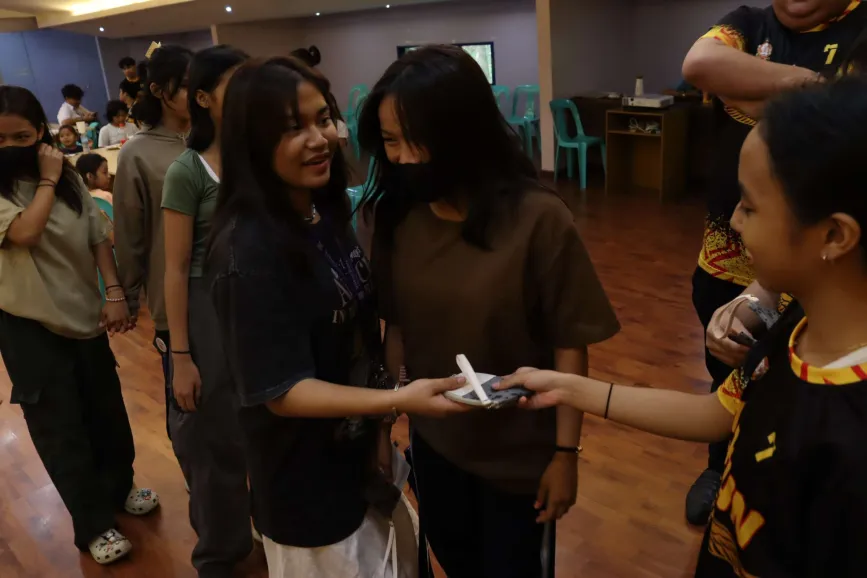

Our Programs
Interaction with Orphans

Having conversations, playing physical games, and giving a tour around the School Campus. These activites can help develope a sense of experience and acknowledgement to the orphans.
Handing Out Delicious Food
Providing nutritious meals to children to support their growth and development.
Study Support Workshops
Provide tutoring, career guidance, or life skills training. These would help children in orphanages bridge learning gaps, improve academic performance, and develop essential skills like critical thinking and time management.
Performances and Donations
For beneficiaries, these would address needs like food, clothing, educational supplies, and more. For donors, these would foster empathy and community engagement, creating a more connected and supportive society.